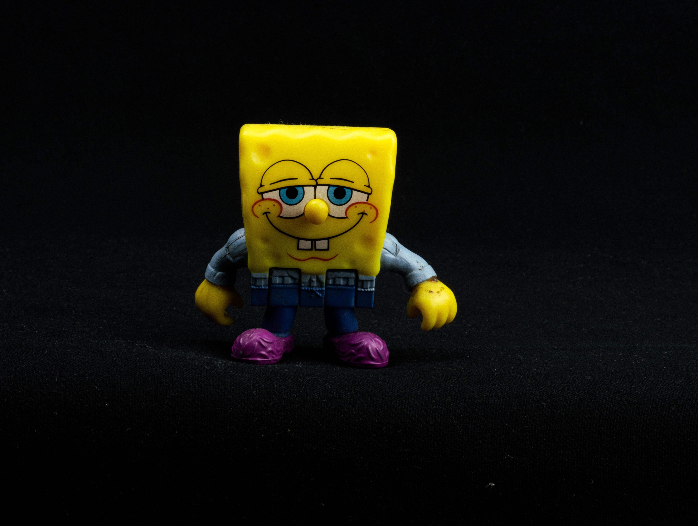

Bob Esponja

La serie narra las aventuras y los esfuerzos de Bob Esponja y sus diversos amigos en la ficticia ciudad submarina de Fondo de Bikini. Es la quinta serie animada estadounidense de más larga duración, su popularidad la ha convertido en una franquicia, así como la serie con la cuota de pantalla más alta jamás emitida en Nickelodeon, y la propiedad más distribuida de ViacomCBS Domestic Media Networks. A finales de 2016, la franquicia de medios generó $13 mil millones de dólares en ingresos de comercialización para Nickelodeon.